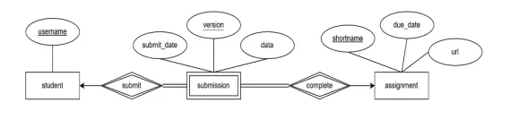
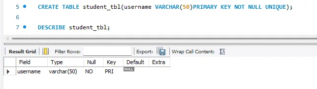

Task Description:
Given the ER diagram representing student assignment submissions, convert it into MySQL tables. Capture all entities and their attributes, and define the relationships between students, submissions, and assignments. Identify the primary and foreign keys and ensure proper representation of any dependent or weak entities.
REQUIRED OUTPUT
- Query statements (Task 1-4 including the table relationship)
- Table Structure (Task 1- 4 including the table relationship)
- ER Diagram or Relational schema from phpMyAdmin or Workbench (pdf or jpg file)
- Sql copy of the database and table structures
Step 1:
- Open XAMPP and start the Apatche and MySQL then open MySQL workbench
- Add a new connection
- Click the connection made
Step 2:
- Create a DATABASE BY using
CREATE DATABASE database_name - Use the database that has created by using
USE database_name
Type the following data types attributes
studenttable:username: String (VARCHAR), up to 50 characters.
-
assignmenttable:shortname: String (VARCHAR), up to 50 characters.due_date: Date, cannot be null.url: String (VARCHAR), up to 255 characters, can be null.
-
submissiontable:username: String (VARCHAR), up to 50 characters.shortname: String (VARCHAR), up to 50 characters.version: Integer, represents the version of the submission.submit_date: Date, cannot be null.Data: Text
Note: Create the appropriate table relationship and enforce necessary REFERENTIAL INTEGRITY CONSTRAINTS
Create student table
code
CREATE TABLE student_tbl(username VARCHAR(50)PRIMARY KEY NOT NULL UNIQUE);
Table Queries and Table Structures
Create submission table
code
CREATE TABLE submission_tbl(username VARCHAR(50), FOREIGN KEY (username) REFERENCES student_tbl(username), shortname VARCHAR(50), FOREIGN KEY(shortname) REFERENCES assignment_tbl(shortname) ON DELETE CASCADE ON UPDATE CASCADE, version INT NOT NULL, submit_date DATE NOT NULL, data TEXT, PRIMARY KEY(username, shortname, version));
Table Queries and Table Structures

Create assignment table
code
CREATE TABLE assignment_tbl (shortname VARCHAR(50) NOT NULL PRIMARY KEY , due_date DATE NOT NULL, url VARCHAR(255) UNIQUE);
Table Queries and Table Structures

HERE IS THE ER Diagram OR Relational schema